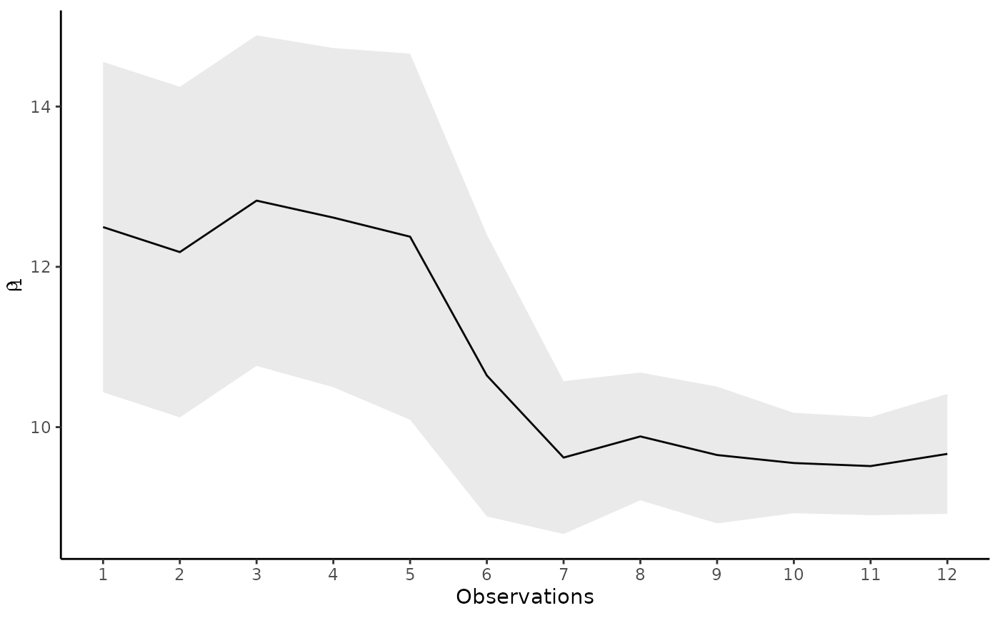

Estimate the Bayesian Mallows Model Sequentially
Source:R/compute_mallows_sequentially.R
compute_mallows_sequentially.RdCompute the posterior distributions of the parameters of the
Bayesian Mallows model using sequential Monte Carlo. This is based on the
algorithms developed in
Stein (2023)
.
This function differs from update_mallows() in that it takes all the data
at once, and uses SMC to fit the model step-by-step. Used in this way, SMC
is an alternative to Metropolis-Hastings, which may work better in some
settings. In addition, it allows visualization of the learning process.
Usage
compute_mallows_sequentially(
data,
initial_values,
model_options = set_model_options(),
smc_options = set_smc_options(),
compute_options = set_compute_options(),
priors = set_priors(),
pfun_estimate = NULL
)Arguments
- data
A list of objects of class "BayesMallowsData" returned from
setup_rank_data(). Each list element is interpreted as the data belonging to a given timepoint.- initial_values
An object of class "BayesMallowsPriorSamples" returned from
sample_prior().- model_options
An object of class "BayesMallowsModelOptions" returned from
set_model_options().- smc_options
An object of class "SMCOptions" returned from
set_smc_options().- compute_options
An object of class "BayesMallowsComputeOptions" returned from
set_compute_options().- priors
An object of class "BayesMallowsPriors" returned from
set_priors().- pfun_estimate
Object returned from
estimate_partition_function(). Defaults toNULL, and will only be used for footrule, Spearman, or Ulam distances when the cardinalities are not available, cf.get_cardinalities().
Details
This function is very new, and plotting functions and other tools for visualizing the posterior distribution do not yet work. See the examples for some workarounds.
References
Stein A (2023). Sequential Inference with the Mallows Model. Ph.D. thesis, Lancaster University.
See also
Other modeling:
burnin(),
burnin<-(),
compute_mallows(),
compute_mallows_mixtures(),
sample_prior(),
update_mallows()
Examples
# Observe one ranking at each of 12 timepoints
library(ggplot2)
data <- lapply(seq_len(nrow(potato_visual)), function(i) {
setup_rank_data(potato_visual[i, ], user_ids = i)
})
initial_values <- sample_prior(
n = 200, n_items = 20,
priors = set_priors(gamma = 3, lambda = .1))
mod <- compute_mallows_sequentially(
data = data,
initial_values = initial_values,
smc_options = set_smc_options(n_particles = 500, mcmc_steps = 20))
# We can see the acceptance ratio of the move step for each timepoint:
get_acceptance_ratios(mod)
#> $alpha_acceptance
#> [,1]
#> [1,] 0.8184
#> [2,] 0.8861
#> [3,] 0.8974
#> [4,] 0.8738
#> [5,] 0.8387
#> [6,] 0.7784
#> [7,] 0.7215
#> [8,] 0.6831
#> [9,] 0.6668
#> [10,] 0.6208
#> [11,] 0.6051
#> [12,] 0.5815
#>
#> $rho_acceptance
#> [,1]
#> [1,] 0.9435
#> [2,] 0.9153
#> [3,] 0.8846
#> [4,] 0.8377
#> [5,] 0.7786
#> [6,] 0.6412
#> [7,] 0.5489
#> [8,] 0.4474
#> [9,] 0.3982
#> [10,] 0.2626
#> [11,] 0.2392
#> [12,] 0.2176
#>
#> $aug_acceptance
#> [,1]
#> [1,] NaN
#> [2,] NaN
#> [3,] NaN
#> [4,] NaN
#> [5,] NaN
#> [6,] NaN
#> [7,] NaN
#> [8,] NaN
#> [9,] NaN
#> [10,] NaN
#> [11,] NaN
#> [12,] NaN
#>
plot_dat <- data.frame(
n_obs = seq_along(data),
alpha_mean = apply(mod$alpha_samples, 2, mean),
alpha_sd = apply(mod$alpha_samples, 2, sd)
)
# Visualize how the dispersion parameter is being learned as more data arrive
ggplot(plot_dat, aes(x = n_obs, y = alpha_mean, ymin = alpha_mean - alpha_sd,
ymax = alpha_mean + alpha_sd)) +
geom_line() +
geom_ribbon(alpha = .1) +
ylab(expression(alpha)) +
xlab("Observations") +
theme_classic() +
scale_x_continuous(
breaks = seq(min(plot_dat$n_obs), max(plot_dat$n_obs), by = 1))
# Visualize the learning of the rank for a given item (item 1 in this example)
plot_dat <- data.frame(
n_obs = seq_along(data),
rank_mean = apply(mod$rho_samples[1, , ], 2, mean),
rank_sd = apply(mod$rho_samples[1, , ], 2, sd)
)
ggplot(plot_dat, aes(x = n_obs, y = rank_mean, ymin = rank_mean - rank_sd,
ymax = rank_mean + rank_sd)) +
geom_line() +
geom_ribbon(alpha = .1) +
xlab("Observations") +
ylab(expression(rho[1])) +
theme_classic() +
scale_x_continuous(
breaks = seq(min(plot_dat$n_obs), max(plot_dat$n_obs), by = 1))
